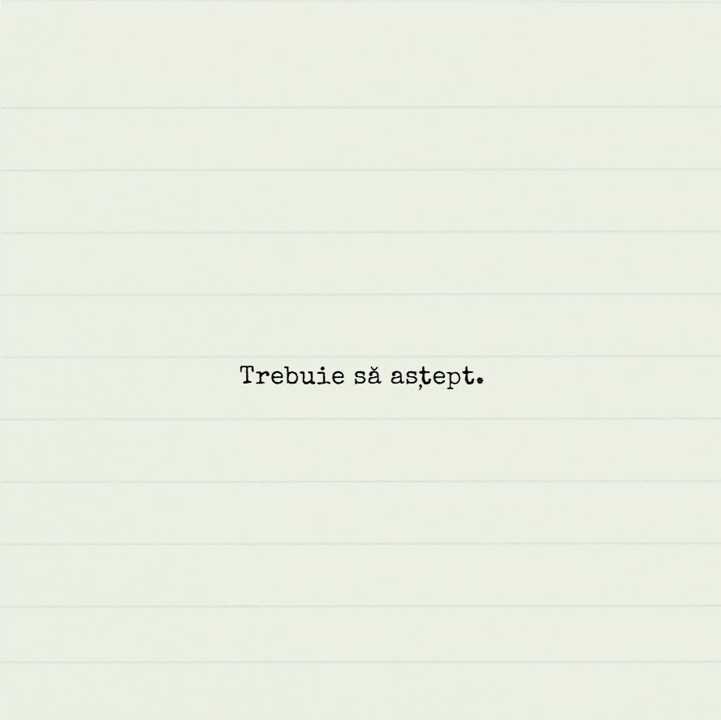
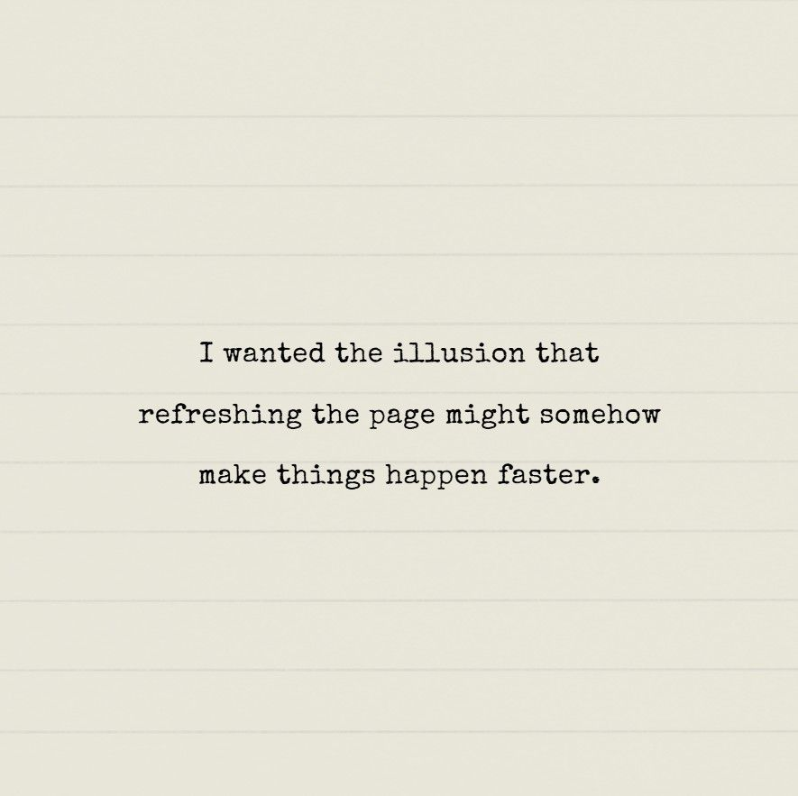
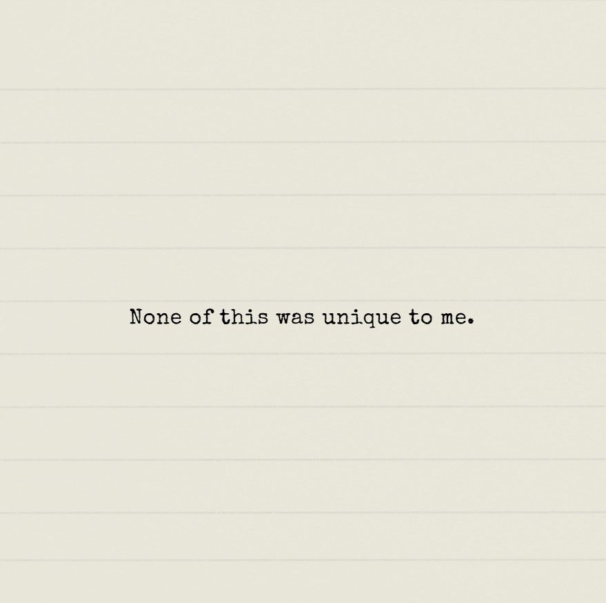
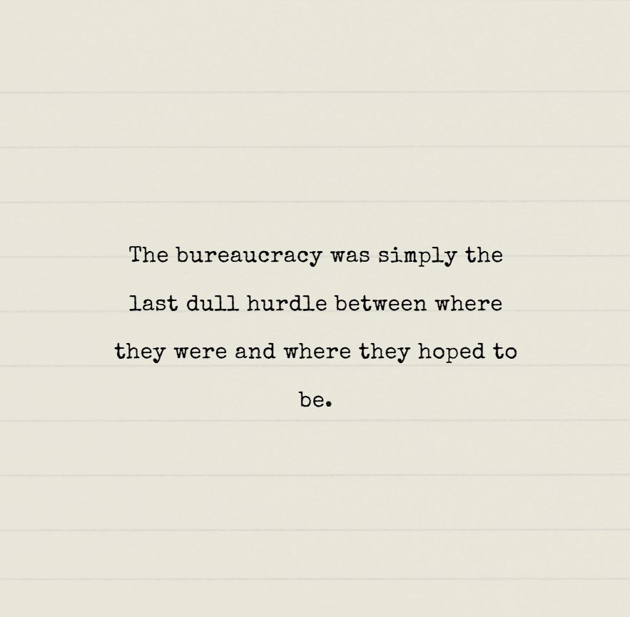

Journey 07 · Romania Note 6 of 7 Field Note
Trebuie să Aștept

Over the past few months, I have made more trips to the immigration office than I can easily remember. Some visits took five minutes. Some took hours. Sometimes I left with a new piece of paper. More often, I left with a new question. Most of the time, I left knowing slightly more than when I arrived, but never enough to see the whole picture.
At first, that uncertainty bothered me.

I wanted timelines. Status updates. Milestones. I wanted to know where my application was, who had it, what came next, and how long everything would take. I wanted the same thing I want from every modern system: a status page, a progress bar, and the illusion that refreshing the page might somehow make things happen faster.
The reality is much less elegant.
No one ever called to tell me I needed different paperwork. There were no emails explaining that a form needed to be completed a different way. Appointments I scheduled online sometimes seemed disconnected from whatever reality existed inside the office itself. Emails disappeared into a bureaucratic dimension somewhere beneath Timișoara. If I wanted information, I usually had to walk along the river, cross several streets and navigate several park trails in order to show up in person and talk to someone in my very poor Romanian. “Hello, Buna,” I would begin, preparing to deploy my entire diplomatic vocabulary. “Verific informații despre viza mea de student? Student visa?”
Inevitably the answer was, “Revino mai târziu, nu este aici. Not here. Come back.” Until one day… it wasn’t. On this day, the officer reached into a cabinet and pulled out a card with my face on it and asked “Is this you?”
My visa, it seems, was ready!
“Revino mai târziu, come back at 3:30,” I was told, and I floated from the immigration office to the coffee shop around the corner where I celebrated with coffee, croissants, and lemonade while studying Romanian grammar and vocabulary. There had been no one at the office that morning, so all signs were pointing to an efficient and easy visa pick up process.
At 3:15, I meandered back to the immigration officer, where the line snaked out the door and down the steps. I was still on the sidewalk in front of the building when I realized that I was already in line. It would not, it seems, be the quick and easy pick up I had anticipated. I joined the line of people, all of whom were waiting for their own turn at the immigration desk.

And while I was standing in line that afternoon, I realized none of this was unique to me.
Everyone around me was doing the same thing.
Students. Workers. Families. People speaking Romanian, English, Italian, and languages I couldn’t identify. Some were picking up permits. Some were dropping off documents. Some were trying to figure out what came next.
Nobody seemed particularly happy to be standing on those stairs. But nobody seemed especially angry either.
There was no one demanding to speak to a manager. No dramatic confrontations. No sense that anyone believed they had been singled out for special inconvenience. Just the mild boredom of wading through a necessary bureaucratic process, an unskippable cut-scene in the video game of European residency.
We were all experiencing the same system.
Not a terrible system, but a frustrating one. It was a process that often felt like it had been lifted whole from a 1990s sitcom about government offices, one originally intended as satire but instead adopted as a remarkably accurate training video.
And yet, everyone stayed.
Because nobody was really there for the line. The line was simply the price of admission.

For some people, this line was the doorway leading to a job. For others, it was an important step toward earning a degree. Some stood on the stairs with me in hopes of reuniting with family; others because they were trying to build a future in a new country. Nobody was there because they enjoyed waiting. The bureaucracy was simply the last dull hurdle between where they were and where they hoped to be.
The reasons were all different, but the hope was remarkably similar.
In the past, I was in line waiting for paperwork, then I was waiting for news. Now, I was simply waiting for my turn.
The card already existed. It was somewhere inside the building. Eventually, someone would hand it to me.
The Romanian test I’ve been studying for has prepared me for this moment:
Trebuie să aștept.
I must wait.
Originally published at fieldnotesfromabroad.com/2026/06/06/trebuie-sa-astept/